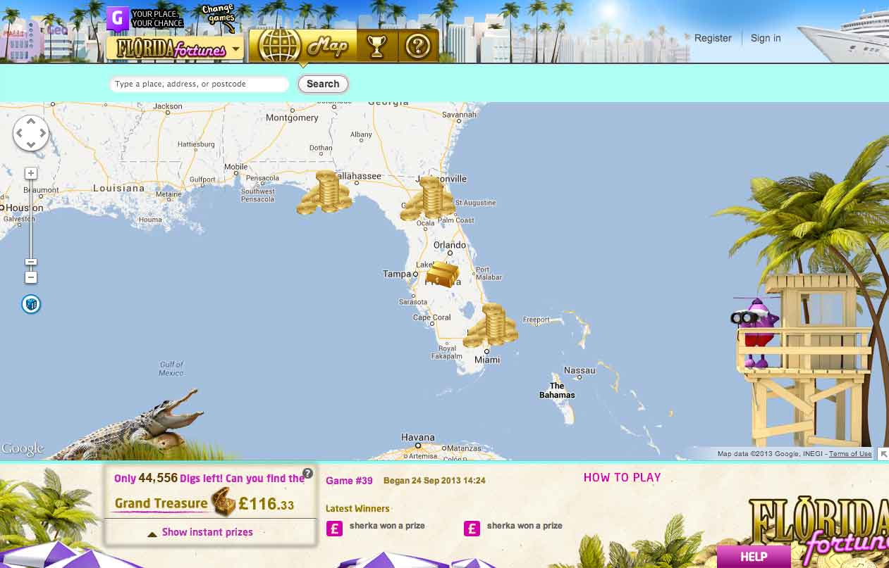

<!DOCTYPE html>
<html lang="en">
  <head>
    <meta charset="utf-8">
    <meta name="viewport" content="width=device-width, initial-scale=1.0">
    <meta name="description" content="">
    <meta name="author" content="">
    <link rel="shortcut icon" href="assets/ico/favicon.ico">

    <title>treasure hunt 2nd chance</title>

    <!-- Bootstrap core CSS -->
    <link href="dist/css/bootstrap.css" rel="stylesheet">

    <!-- Google Font CSS -->    
    <link href='http://fonts.googleapis.com/css?family=Source+Sans+Pro:400,700,400italic' rel='stylesheet' type='text/css'>

    <!-- Custom styles for this template -->
    <link href="geonomics.css" rel="stylesheet">

    <!-- HTML5 shim and Respond.js IE8 support of HTML5 elements and media queries -->
    <!--[if lt IE 9]>
      <script src="assets/js/html5shiv.js"></script>
      <script src="assets/js/respond.min.js"></script>
    <![endif]-->
  </head>

  <body class="">

    <!-- Fixed navbar -->
    <div class="navbar navbar-default">
      <div class="container">
        <div class="navbar-header">
          <button type="button" class="navbar-toggle" data-toggle="collapse" data-target=".navbar-collapse">
            <span class="icon-bar"></span>
            <span class="icon-bar"></span>
            <span class="icon-bar"></span>
          </button>
          <a class="navbar-brand" href="index.html"><strong>Geonomics</strong></a>
        </div>
        <div class="navbar-collapse collapse">
	      <ul class="nav navbar-nav">
	      <!-- 'Active' conditionals on top nav -->
	        
            <li><a href="products.html">Products</a></li>
	        
	        
            <li><a href="about.html">Company</a></li>
	        
	        
            <li><a href="team.html">Team</a></li>
	        

	        
            <li><a href="careers.html">Careers</a></li>
	        
        </ul>
          <ul class="nav navbar-nav navbar-right">
            <li><a href="http://www.geolotto.co.uk/" target="new">Play GeoLotto &rarr;</a></li>
          </ul>
        </div><!--/.nav-collapse -->
      </div>
    </div>

<div class="container">

<h1>Treasure Hunt: 2<sup>nd</sup> Chance</h1>
<p class="lead">Combine scratch tickets with our map-based instant-win game to drive players online</p>

<div class="row">
	<div class="col-xs-12 col-md-12">
			
	</div>
</div><!-- /row -->

<div class="row">
	<div class="col-xs-12 col-md-6">
		<h2>Lose offline, win online</h2>
		<p><strong>Treasure Hunt: 2nd Chance</strong> allows holders of participating non-winning scratch tickets a 'second chance' to win through our engaging online <a href="treasure-hunt.html">instant-win game</a>. Players simply validate the code on their ticket, receive their free credits and 'dig' around on a map see what prizes they can unearth.</p>
	</div>
	<div class="col-xs-12 col-md-6">
		<h2>Invigorate ticket sales, overcome regulations</h2>
		<p><strong>Treasure Hunt: 2nd Chance</strong> provides lotteries a means of offering their players a truly interactive, mobile optimised game in today’s regulatory environment.</p>
	</div>
</div><!-- /row -->

<hr>

<div class="row">
	<div class="col-xs-12 col-md-12">
	<h2>How the 'second chance' game works</h2>
	<p class="lead">The game starts when a player buys a participating scratch ticket in a retail store...</p>
		<p></p>
		<h4>The User's Journey</h4>
		<ol>
			<li>A player buys a participating scratch ticket from a retail store. If he doesn't win, he can use the 2nd Chance access code on the ticket</li>
			<li>The players goes to the game website</li>
			<li>The player logs in or registers then enters their access code(s)</li>
			<li>The player's valid code assigns them a pre-determined outcome, win or lose</li>
			<li>If the player wants to dig again, he buys another ticket</li>
		</ol>
	</div>
</div>

<hr>

<h3>Features</h3>

<div class="row">
	<div class="col-xs-12 col-md-3">
		<h4>Multi-platform Gaming</h4>
		<p>GeoLotto is a browser-based game which runs on internet-standard infrastructure and is widely accessible on a variety of web browsers, including those supported by iPhone, iPad and Android.</p>		
	</div><!-- /col -->
	<div class="col-xs-12 col-md-3">
	<h4>Customised Geos</h4>
		<p>Players can make the game personal to them by customising their Geos. Geos can be given names and taglines, giving players the chance to tell everyone why they chose that location.</p>		
	</div><!-- /col -->
	<div class="col-xs-12 col-md-3">
	<h4>Social Media Integration</h4>
		<p>Not only can players use social media tools to invite their friends to play GeoLotto, they
can use it as a means of boasting about their wins! The in-built “Share My Win” option links GeoLotto to social networking sites, including Facebook and Twitter, allowing for a quick and easy announcement of their win.</p>		
	</div><!-- /col -->
	<div class="col-xs-12 col-md-3">
	<h4>Themed Games</h4>
		<p>Players can participate in exciting themed games, which the lottery can create for promotions. Game-boards can be set over Caribbean Islands, where players play for the chance to win a luxury Caribbean Holiday! Or sports venues can be the focus of a draw by celebrating the Olympics, the Football World Cup or local sporting events. This keeps the game fun and engaging, and gives players the innovation and change they’re looking for!</p>
	</div><!-- /col -->
	<div class="col-xs-12 col-md-3">
		<h4>Flexible Draw Structure</h4>
			<p>We endeavour to offer a game which offers maximum flexibility in allowing lotteries to create prize structures and odds which complement their requirements. A Hardware Random Number Generator is used to select Geos and allocate them to a prize tier.</p>	
	</div><!-- /.col -->
	<div class="col-xs-12 col-md-3">
		<h4>Game board configuration</h4>
			<p>The number of Geos placed over the map is completely configurable, and it’s up to you how many you’d like. We also vary the size of Geos – larger Geos in rural areas, and smaller Geos in urban areas and on points of interest so that more people can be involved in the action! So don’t worry if you’ve got areas of high population density – we will adjust the size of each Geo so that everyone has a fair chance to play. This approach also keeps most of the prize winning Geos concentrated in relevant places!
</p>	
	</div><!-- /.col -->
</div><!-- /row -->

<hr>
<h3>Product Customisation</h3>
<div class="row">
	<div class="col-xs-12 col-md-6">
		<h4>Configuration Options</h4>
		<p>With flexible parameters, the product can be configured almost any way you want:</p>
		<ul>
			<li><strong>Odds</strong></li>
			<li><strong>Map</strong></li>
			<li><strong>Look & Feel</strong></li>
			<li><strong>Prizes</strong></li>
			<li><strong>Digging Avatars</strong></li>
			<li><strong>Sounds</strong></li>
		</ul>
	</div><!-- /.col -->
	<div class="col-xs-12 col-md-6">
			<h4>Premium Options</h4>
			<p>For an added fee, Geonomics can create you your own custom storyline for your Treasure Hunt. Creating a storyline creates a whole package for the game that integrates a custom map with relevant characters, themes, prizes and even a plot!</p>
			
	</div><!-- /.col -->
</div><!-- /.row -->
<hr>

<div class="row">
	<div class="col-xs-12 col-md-6">
		<h2>Services</h2>
		<p class="lead">Geonomics offers lottery operators a range of additional services to deliver the perfect gaming solution</p>
	</div><!-- /.col -->
</div><!-- /.row -->
<div class="row">
	<div class="col-xs-12 col-md-6">		
		<h3>Hosting options</h3>
		<p>We can fully host the game or integrate it with your systems with different degrees of dependency, allowing you to co-host the game with us or operate it independently.</p>
	</div><!-- /.col -->
	<div class="col-xs-12 col-md-6">		
		<h3>API (Application Programming Interface)</h3>
		<p>Our game platform is easy to integrate with lottery systems through our API. We offer operators the ability to take advantage of features such as as "single sign-on" or full reporting and auditing integration. Our APIs are supported by complete documentation.</p>
	</div><!-- /.col -->
</div><!-- /.row -->
<div class="row">		
	<div class="col-xs-12 col-md-6">
		<h3>Branding Integration</h3>
		<p>Working with your creative team, we can skin the game to match your lottery's branding and visual style.</p>
	</div><!-- /.col -->
	<div class="col-xs-12 col-md-6">		
		<h3>Marketing Support</h3>
		<p>Using our experience operating our own gaming products, we offer customers incisive marketing wisdom to create the best conditions for taking their new game to market.</p>
	</div><!-- /.col -->
</div><!-- /.row -->

<hr>

<div class="row">
	<div class="col-xs-12 col-sm-6">
		<h2>Benefits for lottery operators</h2>
	</div>
</div>

<div class="row">
	<div class="col-xs-12 col-sm-6 col-md-3">
		<h3>Wider appeal</h3>
		<p>With an ageing player base for traditional lottery games, our innovative online games can expand your game portfolio to reach a  wider audience.</p>
	</div><!-- /col -->
	<div class="col-xs-12 col-sm-6 col-md-3">
		<h3>Non-cannibalistic</h3>
		<p>Recent research conducted in the US shows that 75&ndash;80% of players interested in our games would play them <strong>in addition</strong> to traditional lottery games.</p>
	</div><!-- /col -->
	<div class="col-xs-12 col-sm-6 col-md-3">
		<h3>Player analytics</h3>
		<p>Create invaluable profiles of your players with our extensive analytics data. </p>
	</div><!-- /col -->
	<div class="col-xs-12 col-sm-6 col-md-3">
		<h3>Sales growth</h3>
		<p>By attracting new players, our games offer immediate potential for growth and higher spend rates across your entire portfolio.</p>
	</div><!-- /col -->
</div> <!-- /row -->
<div class="row">
	<div class="col-xs-12 col-sm-6 col-md-3">
		<h3>Secure data</h3>
		<p>Our products adhere to the highest standards for data security and operational reliability, including PCI compliance, robust backup systems, independent security audits and top-grade data encryption.</p>
	</div><!-- /col -->
	<div class="col-xs-12 col-sm-6 col-md-3">
		<h3>Patented technology</h3>
		<p>With a US Patent (number 8,167,701 B2) and a further 18 applications pending, our core technology and gaming concept is unique and protected from infringement.</p>
	</div><!-- /col -->
	<div class="col-xs-12 col-sm-6 col-md-3">
		<h3>Structured implementation</h3>
		<p>Working with our affable and highly-skilled team, our formalised 8-step implementation process ensures a smooth transition from project kickoff to product launch.</p>
	</div><!-- /col -->
	<div class="col-xs-12 col-sm-6 col-md-3">
		<h3>Flexible cost model</h3>
		<p>We offer a flexible pricing model based on revenue sharing, license fees or a combination of both that can be tailored to suit your needs (advanced product customisations may incur additional fees.)</p>
	</div><!-- /col -->
</div> <!-- /row -->

<hr>

	<div class="row">
		<div class="col-xs-12 col-md-6">
			<h2>Security & Reliability</h2>
			<p class="lead">Our products adhere to the highest standards for data security and operational reliability.</p>
		</div>
	</div>
	<div class="row">
		<div class="col-xs-12 col-md-6">
			<h4 id="pcicompliant">PCI compliant</h4>
			<p>Our processes and infrastructure comply with the highest Payment Card Industry and Gambling Commission security standards. We've also had a full review of our systems performed by a Qualified Security Assessor (QSA) to ensure our ability to self-certify and maintain future compliance.</p>
	
			<h4 id="safetyinbackups">Backup safety</h4>
			<p>We maintain regular and frequent backups of all system and game data. All backups are encrypted before transfer to a secure on-site location (either a geographically-constrained instance of Amazon S3, as used by GeoLotto in the UK, or to an alternate data centre).</p>
	
			<h4 id="dataredundancynosinglepointsfailure">Data redundancy</h4>
			<p>Our gaming solutions are architected with full redundancy to ensure that no individual server is a single point of failure. Therefore, the loss of an entire server (physical or virtual) or a switch will not halt the operation of the game. Additionally, all servers, firewalls and switches have redundant disks, power and network connections for maximum failsafe protection.</p>
		</div><!-- /.col -->
		
	<div class="col-xs-12 col-md-6">
			<h4 id="independentsecurityaudits">Independent security audits</h4>
			<p>Geonomics has an annual independent security audit performed with the results submitted to the UK Gambling Commission to meet their technical security standards. The security standards are based in part on ISO 27001.</p>
	
			<h4 id="othersecuritymeasures:">Other security measures</h4>
			<ul>
				<li>Segmented network architecture</li>
				<li>Tight access control</li>
				<li>Comprehensive logging and audit trails and daily log review</li>
				<li>Intrusion detection system</li>
				<li>Web application firewall</li>
				<li>File integrity monitoring</li>
				<li>Industry accepted best-practice build standards</li>
				<li>Regular patching cycles</li>
				<li>Secure coding standards</li>
				<li>Change management procedures</li>
				<li>Penetration testing and internal and external vulnerability scanning at regular intervals and upon significant changes</li>
				<li>Encryption of sensitive data</li>
			</ul>
		</div><!-- /.col -->
	</div><!-- /.row -->

<hr>

<div class="row">
	<div class="col-xs-12 col-md-6">
		<h2>Patented Technology</h2>
	</div> <!-- /.col -->
		<div class="col-xs-12 col-md-6">
		<p>With a US Patent (number 8,167,701 B2) and a further 18 applications pending, our core technology and gaming concept is protected from infringement.</p>
	</div> <!-- /.col -->

</div><!-- /.row -->
<div class="well">
	<h4>Want more information?</h4>
	<p>Email the Geonomics sales team for a brochure or consultation:</p>
	<p><a href="mailto:sales@geonomics.com">sales@geonomics.com</a></p>
</div>


</div> <!-- /container -->

<p>&nbsp;</p>
<nav class="navbar navbar-default" role="navigation">
	<div class="container">
          <ul class="nav navbar-nav">
            <li><a href="contact.html">Contact</a></li>
            <li><a href="news.html">News</a></li>
            <li><a href="privacy.html">Privacy & Cookies</a></li>
            <li><a href="terms.html">Terms & Conditions</a></li>
            <li><a href="http://www.linkedin.com/company/geonomics">LinkedIn</a></li>
            <li><a href="https://www.facebook.com/pages/Geonomics/397409547005995">Facebook</a></li>
            <li><a href="https://twitter.com/Geonomics">Twitter</a></li>
          </ul>
    	<p class="navbar-text"><small>&copy; 2010–2014 Geonomics. Regulated by the <a href="http://www.gamblingcommission.gov.uk/">UK Gambling Commission</a>. Licence number: 000-027369-R-315446-001</small></p>
	</div><!-- /.container -->

</nav>

    <!-- Bootstrap core JavaScript
    ================================================== -->
    <!-- Placed at the end of the document so the pages load faster -->
    <script src="assets/js/jquery.js"></script>
    <script src="assets/js/holder.js"></script>
    <script src="dist/js/bootstrap.min.js"></script>
  </body>
</html>